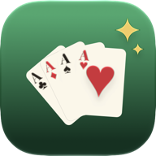

Solitaire Support
A Klondike card game for iPhone
Need help, found a bug, or have an idea? Open an issue on GitHub and describe what happened. You’ll need a free GitHub account.
Playing
How do I move cards?
Drag a card, or a run of cards, to where you want it. You can also tap a card to move it automatically: to a foundation if it fits there, otherwise to a column that takes it.
How do I draw from the deck?
Tap the stock, the face-down pile at the top left of the board. When it runs out, tap its empty spot to turn the waste back over and go through the deck again.
What’s the difference between Draw 1 and Draw 3?
Draw 1 turns over one card at a time. Draw 3 turns over three, and only the top one can be played. Draw 3 follows traditional Klondike rules and is harder.
How do I start a new game or change the draw mode?
Tap the + button, choose Draw 1 or Draw 3, then tap Deal Cards.
Can I take back a move?
Yes. Tap the Undo button, the curved arrow, to step back one move at a time.
What does “No useful moves left” mean?
The game checks whether any sequence of moves could still turn over a card or play one from the deck. When none can, even if the only moves left go in circles, it offers to undo a move or deal a new game. You can also keep looking.
Will I lose my game if I close the app?
No. Your game saves automatically and picks up where you left off. The clock pauses while the app is in the background.
Does it work on a foldable iPhone?
Yes. On iPhone Duo, when the phone is half open, the board splits around the fold so no card sits on the crease.
Scoring
Solitaire uses the standard scoring from classic Windows Solitaire.
| Action | Points |
|---|---|
| A card to a foundation | +10 |
| A waste card to a column | +5 |
| Turning over a face-down card | +5 |
| A foundation card back to a column | −15 |
| Going through the deck again, after the first pass in Draw 1 | −100 |
| Going through the deck again, after the third pass in Draw 3 | −20 |
| Every 10 seconds of play | −2 |
The score never drops below zero. Undo takes back a move’s points, but not the time. Winning in more than 30 seconds adds a time bonus of 700,000 divided by the seconds taken.
Requirements
An iPhone with iOS 26 or later.
Privacy
Solitaire doesn’t collect any information about you. Read the privacy policy.